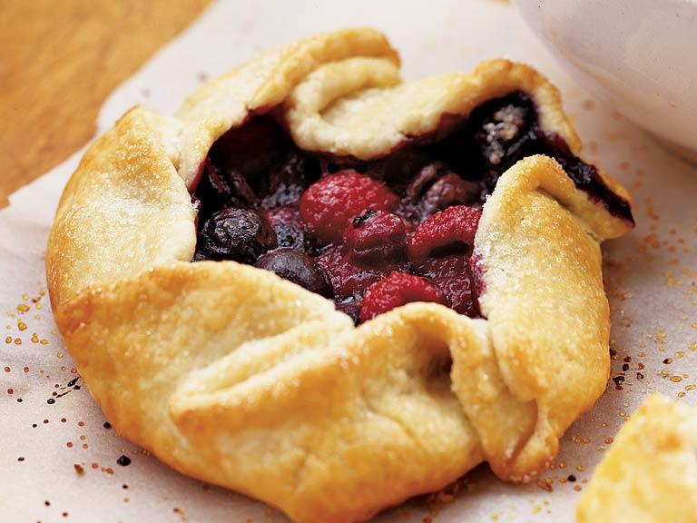

Rustic Berry Crostata Recipe

Ingredients
For pastry crust:
- 2 cups all-purpose flour
- 3 tablespoons sugar
- 1/4 teaspoon salt 1 cup cold unsalted butter, cut into pieces
- 1 large egg yolk
- 3 tablespoons ice-cold milk (or water)
For berry filling:
- 2 cups fresh blueberries (about 1 pint)
- 1 cup fresh raspberries (about 1/2 pint)
- 1/3 cup sugar, plus more for sprinkling on top (about 1 to 2 tablespoons)
- 3 tablespoons cornstarch
- 1/2 teaspoon ground cinnamon
- 1/4 teaspoon ground ginger
- 1/4 teaspoon salt
- 4 tablespoons butter, cut into 8 pieces
- 1 large egg
- 1 to 2 tablespoons milk
Directions
- Combine first 3 ingredients in a large bowl. Mix in 1 cup cold butter with a pastry blender or two forks until mixture resembles coarse meal. Whisk together egg yolk and 3 tablespoons milk; pour into flour mixture, stirring just until dough starts to form a ball. Press together with lightly floured hands, and form into a flat round. Cover with plastic wrap; place in refrigerator at least 1 hour or overnight.
- Preheat oven to 375°.
- Combine blueberries, raspberries, 1/3 cup sugar, and next 4 ingredients in a large bowl.
- Remove dough from refrigerator; divide evenly into 8 pieces. Roll each piece on a lightly floured surface into about 6-inch rounds; place on 2 lightly greased large baking sheets. Scoop 1/4 cup berry mixture into center of each round; top each with butter. Fold about 1 inch of dough over fruit all the way around to form a rim.
- Combine egg and milk; brush outside of each tart with the egg wash. Sprinkle tarts with about 1 to 2 tablespoons sugar. Bake at 375° for 40 to 45 minutes or until golden brown, rotating baking sheet halfway through baking. Let cool on pan 5 minutes. Remove to a wire rack; let cool. Serve with lightly sweetened whipped cream or vanilla ice cream.
Contact me!
Dominic's Email
The University of Montana
32 Campus Dr
Missoula, MT 59812